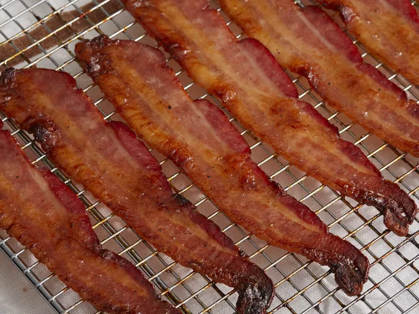

Bacon

Description
This is yummy bacon.
Ingredients
- ¼ cup packed brown sugar
- 2 tablespoons rice vinegar
- 2 tablespoons maple syrup
- ground black pepper to taste
- 1 pound thick-cut bacon
Steps
- Preheat the oven to 350 degrees F (175 degrees C).
- Mix brown sugar, rice vinegar, maple syrup, and black pepper in a small bowl.
- Place bacon slices on a cooling rack set over a baking sheet.
- Bake in the preheated oven for 10 minutes, turn slices, and bake another 5 minutes.
- Remove bacon and brush both sides with brown sugar mixture.
- Return bacon to the oven and bake another 5 minutes.
- Repeat basting every 5 minutes until bacon is browned and crisp, about 35 minutes.
Home